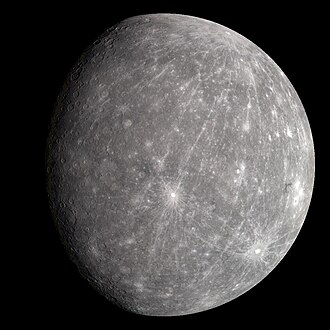
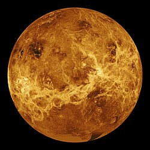
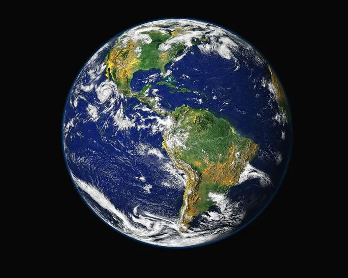
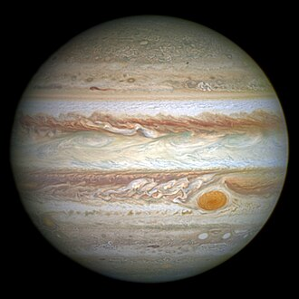

📊 Comparativo dos Planetas do Sistema Solar
| Planeta | Distância Média do Sol | Raio Aproximado | Número de Luas |
|---|---|---|---|
|
 Mercúrio |
57,9 milhões de km | 2.439 km | 0 |
|
 Vênus |
108,2 milhões de km | 6.051 km | 0 |
|
 Terra |
149,6 milhões de km | 6.371 km | 1 |
|
|
227,9 milhões de km | 3.389 km | 2 |
|
 Júpiter |
778,5 milhões de km | 69.911 km | 95 |
|
|
1,43 bilhão de km | 58.232 km | 146 |
❓ Perguntas Frequentes (FAQ)
Um ano-luz **não é uma unidade de tempo**, mas sim de distância. Corresponde à distância que a luz percorre no vácuo em um ano terrestre. Como a luz viaja a cerca de 300.000 quilômetros por segundo, um ano-luz equivale a aproximadamente **9,46 trilhões de quilômetros**.
A luz do Sol viaja pelo espaço e leva em média **8 minutos e 20 segundos** (cerca de 500 segundos) para percorrer a distância de aproximadamente 150 milhões de quilômetros até atingir a superfície da Terra.
Muitos telescópios espaciais capturam imagens em preto e branco usando filtros especializados para comprimentos de onda específicos (incluindo infravermelho e ultravioleta invisíveis ao olho humano). Cientistas e astrônomos atribuem cores científicas a essas imagens para destacar detalhes como gases, poeira e elementos químicos.